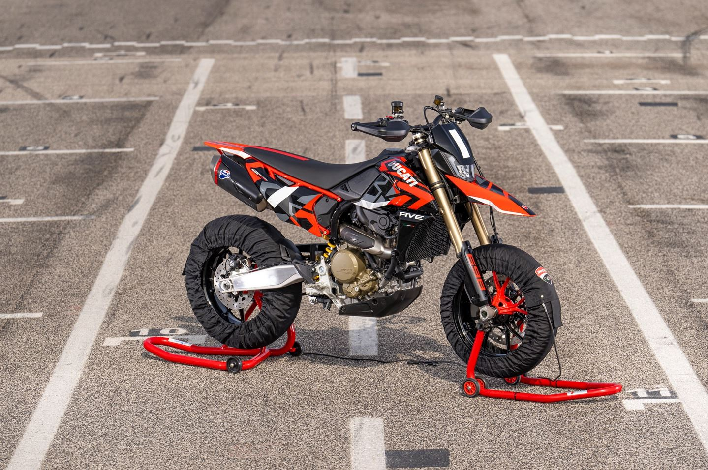
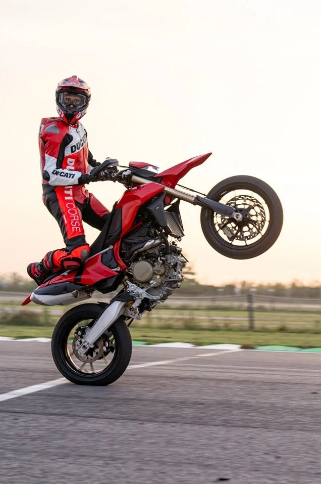
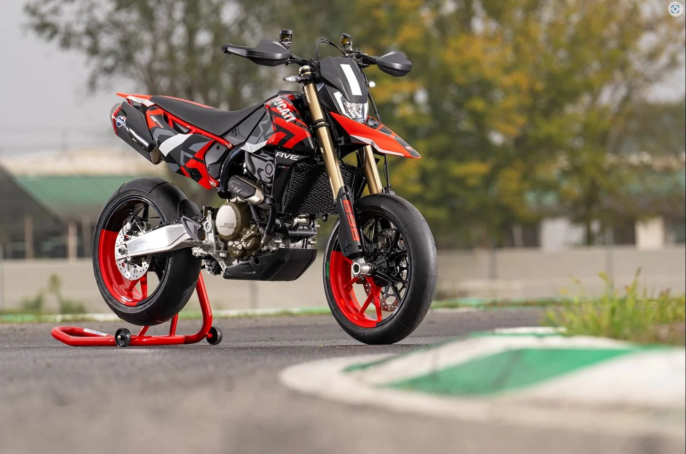
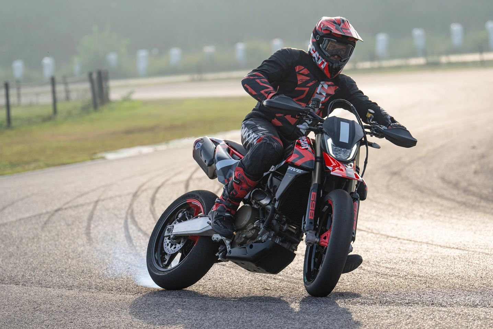

Danh mục
Bài viết liên quan
các bài viết liên quan sau khi có data sẽ được hiển thị chỗ này, ai làm backend tới đoạn này thì nhớ liên hệ Hậu
Chiếc cào cào phố Ducati Hypermotard 698 động cơ xy-lanh đơn đầu tiên sau 30 năm của nhà Du
Đây là lần đầu tiên Ducati cho ra mắt dòng xe cào cào phố Hypermotard 698 sử dụng động cơ xy-lanh đơn mang tên Superquadro Mono.
Thực tế, đây không phải lần đầu tiên Ducati phát triển một mẫu động cơ xy-lanh đơn trên những chiếc xe thương mại của mình. Lần gần đây nhất phải kể đến 30 năm về trước, Ducati đã từng có một dòng xe mang tên Ducati Supermono tuy nhiên đến nay đã quá lâu có lẽ không còn nhiều người biết về mẫu xe này.
Về cơ bản động cơ Superquadro Mono được trang bị trên chiếc Hypermotard 698 mới của Ducati chính là động cơ được trang bị trên chiếc Panigale 1299 nhưng được lượt bỏ đi 1 xy-lanh. Với dung tích 659cc, piston siêu khủng với đường kính 116mm và hành trình cực ngắn 62.4mm, nói đến đây anh em có chút kiến thức về kỹ thuật có thể hình dung ra được một khối động cơ cực kì "ĐIÊN RỒ" có thể hất tung người lái về phía sau nếu chưa từng có kinh nghiệm lái PKL.
Có thể thấy ngay Hypermotard 698 - chiếc cào cào thương mại đầu tiên của Ducati này chính là đối thủ trực tiếp đến KTM 690 SMCR và Husqvarna 701 cũng sở hữu khối động cơ xy-lanh đơn cực kì hỗn hào tương tự. Tuy nhiên, khác với đường nét thuần cào cào như các đối thủ khác, Ducati Hypermotard 698 lại có một thiết kế hiện đại hơn, nghệ thuật hơn và mang đậm ADN nhà Ducati không lẫn vào đâu được như phần đầu đèn liền lạc với phần vè cao tương tự những chiếc Hypermotard trước đây của nhà Du.
Ngoài thiết kế đậm nét Italy, động cơ với piston lớn và hành trình ngắn, trọng lượng của chiếc Ducati Hypermotard 698 này cũng là một điểm cực kì ấn tượng chỉ với 151kg, đổ đầy bình xăng thì cũng chỉ 162kg nhưng lại mang trong mình sức mạnh 77.5 mã lực cực đại tại 9.750 RPM, 62Nm Mô men xoắn cực đại ở 8000 vòng/phút. Có thễ dễ dàng tưởng tượng ra được lái chiếc xe này trên phố sẽ phấn khích đến thế nào.
